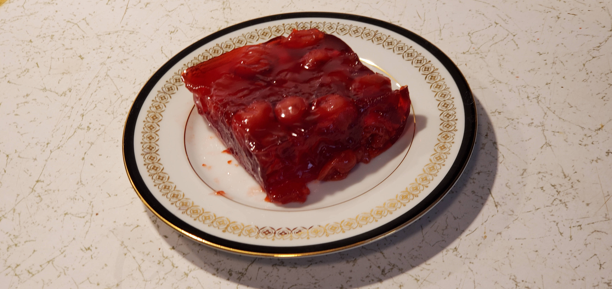

This is a recipe for "Cherry Jell-O Salad"

Ingredients
- 2 cups of boiling water
- 6 oz. box of Jell-O
- 1 can or jar containing approximately 16 oz. of fruit chilled. Try these Jell-O, fruit combinations:
- Cherry Jell-O and a 21 oz. can of LuckyLeaf Premium Cherry Fruit Filling or Topping.
- Orange Jell-O and a 15 oz. can of Del Monte Mandarin Oranges.
- Cherry Jell-O and a 16 oz. jar of Food Lion Whole Maraschino Cherries
Directions
- Dissolve the Jell-O in 2 cups of boiling water.
- Add the chilled fruit in place of 2 cups of cold water.
- Stir to spread the fruit around.
- Refrigerate for 4 hours or until firm.
- Enjoy.
Download Recipe